| Formula One | NBA | Boxing | Rugby | Marathon | Volley Ball |
Sports is a collective word for all forms of games that range from indoors games to outdoors games.World Sports thus is a set of all games that happen and are played worldwide.
Sports in historic perspective began in over a number of centuries ago.
 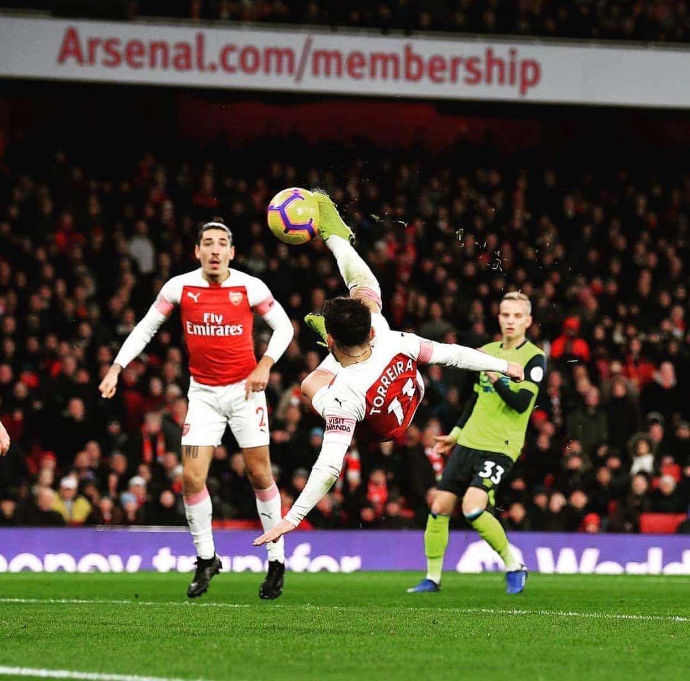
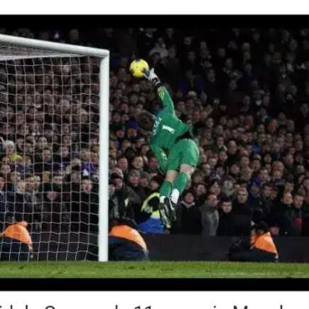
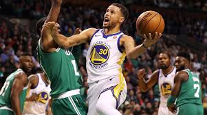
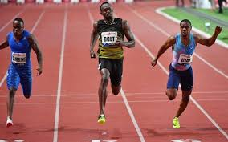
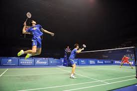
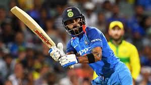
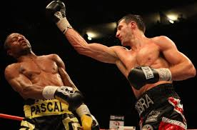
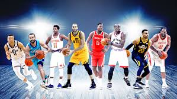
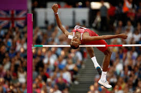
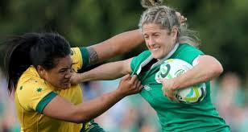
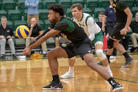
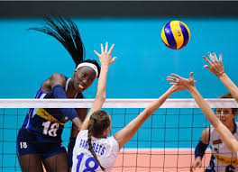
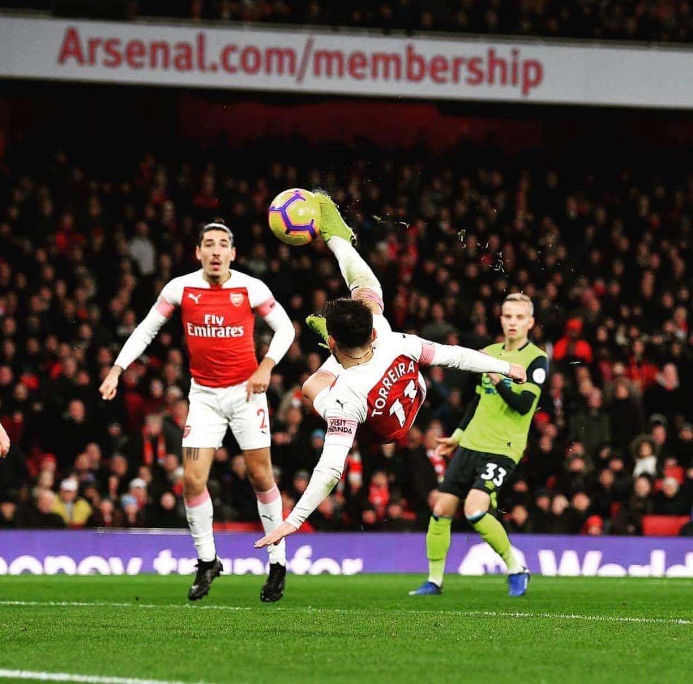
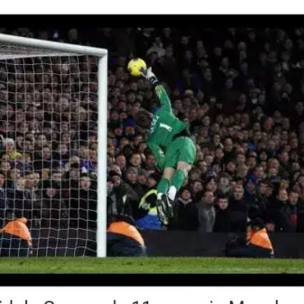
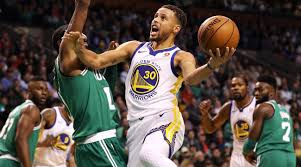
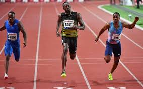
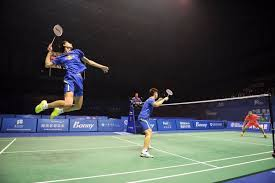
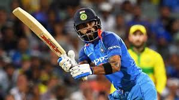
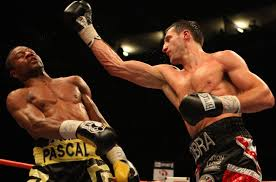
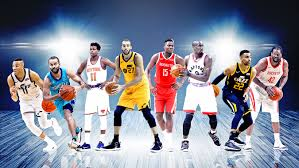
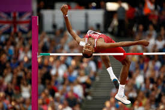
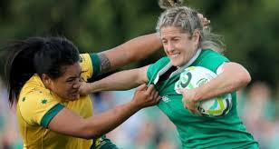
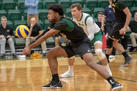
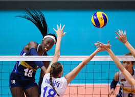
Are English youngsters playing enough?
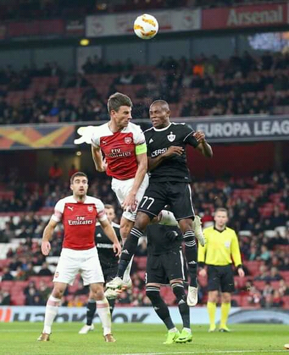
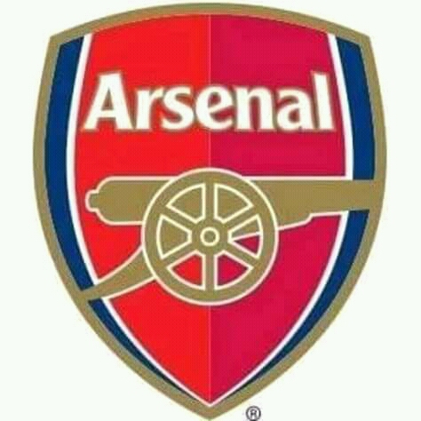
By Nick Grounds
Last Updated: 26/02/19 11:54pm
Phil Foden, Trent Alexander-Arnold and Callum Hudson-Odoi.
Two decades from the last all-English Premier League XI, are England's promising youngsters starting to get the minutes they need?
Wednesday marks 20 years since the last
all-English starting XI took to the field in a Premier League game.
On February 27, 1999, John Gregory's Aston Villa lost 4-1 to Coventry - with 14 Englishmen featuring.
On this anniversary and with English football experiencing a renaissance of gifted young talent, Nick Grounds looks at whether England's emerging players are getting enough
game time at the highest level...
Callum Hudson-Odoi has featured in the headlines regularly throughout the course of this season. And with good reason. His displays pass the
eye test, and it's clear he is a prodigious talent. But is he getting enough game time?
Hudson-Odoi had a transfer request turned down during the January transfer window.
The
Chelsea forward has played a grand total of 15 games in all competitions, with seven of those starts. This, on the surface, does not appear too alarming for an 18-year-old
coming through at a top six club. But just four Premier League appearances, all from the substitutes' bench, give a totally different complexion.
Hudson-Odoi's headlines have
been more to do with his lack of playing time, rather than for his displays on the pitch, while a proposed January move to Bayern Munich featured prominently in the recent
transfer window.
Fans of both Chelsea and England want his talent to be realised, but is Hudson-Odoi an isolated case? Is it the fact that he plays for one of England's leading
sides the reason why he has remained in the public eye? Let us delve deeper into this season's statistics...
| Total minutes played by homegrown Under-23s | |
|---|---|
| League | Minutes |
| Premier League | 25,191 |
| Ligue 1 | 77,975 |
| La Liga | 45,585 |
| Bundesliga | 37,959 |
| Serie A | 34,212 |
Across Europe's top five leagues, the Premier League ranks bottom for total minutes given to under-23 players from that respective country. Ligue 1 leads the way at the time
of writing - some 52,789 more minutes have been afforded to French youngsters in France's top flight, compared to English players.
For a nation who finished runner up at
Euro 2016 and who won the World Cup last year, the FFF's Clairefontaine academy must be applauded.
But the FA have made significant strides in recent years. Since moving
to St George's Park in October 2012, England's under-age sides have excelled. England U20s won the World Cup in 2017, as did the U17 team later that year. While Aidy
Boothroyd's U21s won the Toulon Tournament last summer - their third straight success in the tournament.
Included in the U17 team that won in India are Hudson-Odoi,
Phil Foden and Jadon Sancho. The latter has featured 31 times for Borussia Dortmund so far this season in Germany's Bundesliga, while Foden has 20 Manchester City
appearances; eight of those starts and not one in the Premier League. Dortmund currently sit three points clear of Bayern Munich at the top of the Bundesliga.
Jadon Sancho
has 22 goal contributions in 23 starts for Dortmund
There is no hard and fast way of plotting a route for England's young players to get more game time. Clearly each player
needs to be treated in isolation. Sancho saw his first-team opportunities limited at City, so like several other young English players, swapped England for Germany.
Everton's
Ademola Lookman also enjoyed a loan spell at RB Leipzig in 2017/18. Reece Oxford has spent the last two seasons in the Bundesliga, while Arsenal's Reiss Nelson has featured
22 times on loan at Hoffenheim in 2018/19.
But what if they wanted to remain in England, and specifically in the Premier League? There are opportunities afforded by some clubs;
three in particular. Despite inconsistencies, and sacking their manager Claude Puel over the weekend, Leicester are a beacon for young English talent.
| Minutes played by English players 22 or younger | |
|---|---|
| Club | Minutes played |
| Leicester | 6,335 |
| Everton | 3,505 |
| Tottenham | 2,732 |
| Liverpool | 2,566 |
| Crystal Palace | 2,235 |
Leicester lead the way for most number of minutes afforded to English players 22 or under in the Premier League this season, and by quite some distance.
Some 2,830 minutes more than Everton in second place.
Three 22-year-olds stand out. Ben Chilwell has started all but two of Leicester's 27 Premier League games
and has won five England caps. Demarai Gray has 18 starts, while arguably their biggest success story of the season, James Maddison, has 24 starts and five goals.
Harvey Barnes, 21, has recently returned from a promising loan spell at West Brom in the Championship and started five of the last six games - all in the Premier League.
| Apps by English players 22 or under | |
|---|---|
| Team | Under-22s used |
| Everton | 5 |
| Leicester | 5 |
| Southampton | 5 |
| Tottenham | 5 |
| Arsenal | 4 |
Leicester, along with Everton, Southampton and Tottenham, have fielded the joint-most number of English players under 23 with five. Arsenal rank fifth - fielding four.
From these two tables Leicester, Everton and Tottenham are the three sides who feature prominently, and as such are prepared to give valuable game time to young,
specifically English talent.
With Chelsea banned from registering players for two transfer windows after being found guilty of breaching FIFA rules about signing minors,
they could be tempted to promote young talent. The ban may afford increased minutes for England's Hudson-Odoi and Ruben Loftus-Cheek, while Wales' talented young
player Ethan Ampadu could also profit.
But 20 years on from the last all-English Premier League side, it is clear we may never see a repeat of that Aston Villa team again.
And with England's talented crop of young players waiting in the wings, it remains to be seen whether they are afforded the opportunity to realise their full potential in their
country's top flight
Mechanical problem causes Vettel to crash during morning session; Carlos Sainz sets quickest time of winter for McLaren
By Samuel Johnston and James Galloway
Last Updated:
27/02/19 12:33pm
Ferrari suffered a setback for the second consecutive day of testing as a mechanical issue caused Sebastian Vettel to crash, while McLaren set the fastest time
of the winter so far in Day Two's morning session.
Vettel had made a strong start to the session, completing 40 laps, before hitting the barriers at Turn Three, causing a significant
delay and earning himself a trip to the medical centre, where he was given the all-clear.
The incident ended Ferrari's participation in the morning session with the team
expecting to remain off track for "a few hours". Vettel is due to hand over the SF90 to Charles Leclerc this afternoon.
Vettel still finished second on the timesheet, one second adrift of the morning pace set by McLaren. Carlos Sainz followed up his team-mate Lando Norris's performance
on Tuesday to set the fastest time so far this pre-season with a 1:17.144.
The Spaniard's lap was set on the C4 tyres, the second fastest available.
McLaren's early-session success
was somewhat tempered slightly by a reliability issue interrupting their progress for a second straight day, but Sainz did make it back out onto the track for the end of the session.
Ferrari's issues were compounded by strong runs from their title rivals, as Red Bull and Mercedes both got through considerable mileage.
Max Verstappen completed 69 laps
for Red Bull, despite a brief stoppage at the end of the pit lane as he finished two tenths back from Vettel in third, while Valterri Bottas was five tenths further back for Mercedes.
Recovering from the oil pressure problem which effectively wrote-off their Tuesday afternoon programme, Mercedes completed the most laps of anyone during the morning,
75, as they continued to assess their big W10 car upgrade.
Lewis Hamilton, who drives in the afternoon, has already described the revised car as an "improvement from last
week" with the new parts scheduled to be used at next month's season-opener in Melbourne.
Watch every 2019 practice session, qualifying and race - only on Sky Sports F1.
Meanwhile, Renault were close behind Mercedes on mileage with Daniel Ricciardo focusing on long runs and not setting a representative time in his latest morning in the
RS19.
Daniil Kvyat was fifth fastest for Toro Rosso, just ahead of Alfa Romeo's Kimi Raikkonen and Racing Point's Sergio Perez.
And Williams' road to winter recovery
continued as Robert Kubica put 42 more laps on the FW42 as the Pole posted the team's best lap at Barcelona so far.
| Driver | Team | Total laps | Fastest lap tyre | Fastest lap | |
|---|---|---|---|---|---|
| Carlos Sainz | McLaren | 56 | C4 (2nd softest) | 1:17.144 | |
| Sebastian Vettel | Ferrari | 40 | C3 (softs) | 1:18.195 | |
| Max Verstappen | Red Bull | 69 | C3 (Softs) | 1:18.395 | |
| Valtteri Bottas | Mercedes | 75 | C3 (Softs) | 1:18.941 | |
| Daniil Kvyat | Toro Rosso | 36 | C3 (Softs) | 1:19.060 | |
| Kimi Raikkonen | Alfa Romeo | 43 | C3 (Softs) | 1:19.194 | |
| Sergio Perez | Racing Point | 29 | C3 (Softs) | 1:19.202 | |
| Robert Kubica | Williams | 42 | C5 (Softest) | 1:19.367 | |
| Romain Grosjean | Haas | 57 | C2 (2nd hardest) | 1:19.717 | |
| Daniel Ricciardo | Renault | 72 | C1 (Hardest) | 1:22.597 | |
| Others | |||||
| Lewis Hamilton | Mercedes | ||||
| Charles Leclerc | Ferrari | ||||
| Nico Hulkenberg | Renault | ||||
Dominic Breazeale is targeting Deontay Wilder or Dillian Whyte
Dominic Breazeale expects to either challenge WBC champion Deontay Wilder or battle Dillian Whyte as he
awaits news on his next fight.
The American heavyweight is mandatory challenger for the WBC belt held by Wilder, who must consider new options for a scheduled May 18
fight after his expected rematch with Tyson Fury was postponed.
Breazeale had previously been ordered to fight Whyte for the WBC interim title, which could be staged this summer,
and the Californian hopes to make a decision soon on his two-man shortlist.
WBC champion Wilder must wait for Fury rematch after their draw in Los Angeles
"Of course I want to fight for the world title, but at the same time, I understand the fans want to see me and Dillian Whyte fight," said Breazeale.
"I'm a fan pleaser and I'm ready to fight.
"My preference would be Wilder, of course, definitely. World title shot. It's everything I've been waiting for, for the last 15 months."
Asked about preparation time, he added: "As long as they give me a good eight to 10 weeks before a fight to let me know who I'm going to fight, whether it be Dillian Whyte
or Wilder, that will be ample time to prepare for an individual."
Breazeale defeated Eric Molina in November 2017 to secure a shot at Wilder and is optimistic that terms can eventually
be agreed, with Al Haymon guiding the careers of both fighters.
Breazeale stopped Carlos Negron in his last fight in December "It's never an easy fight to make,if it's
this status," said Breazeale.
"There's a lot of politics still in the game. Who wants to fight where and when, and all of that stuff. How much is everybody getting paid?
It makes for a difficult time.
"At the same time, I stay out of it. Al Haymon has done a great job of getting me this far. He's only been good for me.
"I see it being a smooth fight,
but at the same time, if you asked me that 15 months ago, I would have told you the same thing.
"It's been a long, drawn out process."
Whyte holds the No 1 spot in the WBC
rankings and had welcomed the opportunity to face Breazeale, with the winner emerging as one clear challenger for Wilder.
"That's what we want," said Whyte.
"I've had 10 or more WBC title fights. Been the WBC No 1 ranked fighter for 18 months, two years or something.
"Defended the position, won every WBC belt I was eligible to win,
apart for the world title, so it's about time. Not even the champions have taken the route I've taken."
A high-stakes clash with Whyte would still be considered by Breazeale,
who believes the Brixton man should follow Anthony Joshua over to America after the unified champion announced his next world title defence against Jarrell 'Big Baby'
Miller at Madison Square Garden on June 1, live on Sky Sports Box Office.
Anthony Joshua will defend his world titles against Jarrell Miller in New York
"I think it's time
for Dillian Whyte to come to the US and make a splash in the US market," said Breazeale.
"It would be great in Vegas, if he came over here. I think the UK fans love coming
over to Vegas, enjoying some explosive fight nights, along with the US fans who travel from all over the country for a fight night."
Versatile Bam Adebayo makes life difficult for Steph Curry, Warriors;
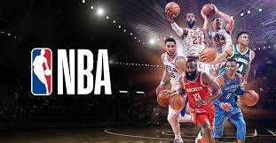
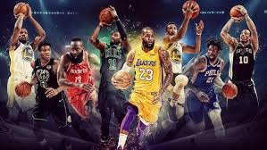
Can Golden State flip defensive switch?
By Brad Botkin
Spurs fighting for a playoff spot in the West Lost in the madness that was Dwyane Wade's buzzer-beating bank shot to beat the Golden State Warriors Wednesday night, Miami
Can Golden State flip defensive switch? Heat second-year big man Bam Adebayo put together a really impressive defensive stretch with the game on the line. Kevin Durant
had found a rhythm, and Erik Spoelstra decided to switch Adebayo onto K.D. for the final five or so minutes of a one-possession, no-room-for-error game. Bam more than held
his own. Watch here as Durant purposely widens out to get Adebayo on an island with a live dribble, thinking he can beat him baseline where there is no help -- only to be stoned
by Bam and forced into a tough, contested jumper back in the spot he started.
Yes, Durant made this shot to tie the game. That's not the point. That play could not have been defended
better by anyone, let alone a big man trying to stick with K.D. on an island. Adebayo moved his feet, made Durant go to a counter move then contested with his hand
as close to Durant's release as was humanly possible without fouling. That Durant is, in Dwyane Wade's words, "an animal," has nothing to do with Adebayo, who more than
acquitted himself against the world's best over multiple possessions.
That's Pretty Interesting: Can Spurs save sinking season?
MVP Rankings: George remains best value bet
And it wasn't just Durant. In this next clip, Bam gets switched onto Klay Thompson, who again has his initial penetration cut off by
Adebayo, only to hit another impossible-for-most-people step-back 3-pointer.
Again, don't get caught up in Klay making that shot. That is nothing more than the old adage that great offense trumps great defense. Bam did everything he could've possibly
done there, and you live with the results.
Still, those results could have shaken his defensive confidence. It wouldn't have been the first time a sharpshooting Warrior broke the
spirit of a defender. But Bam kept at it. Moments later, in perhaps the biggest defensive possession of a tie game with less than two minutes to play, Bam got switched
one-on-one onto Stephen Curry, who had just beaten Bam off the dribble for a layup a few minutes earlier. This time, Bam won.
There aren't more than a handful of big men
in the league, if even that many, who would have any hope of stoning Steph Curry one-on-one with a live dribble. Adebayo told CBS Sports:
"I take it very personally when
anybody tries to dance on me. It don't matter if it's the greatest player in the world, two of the all-time great shooters, whoever. It's a mentality where, like, the switch just flips.
When I ended up on Steph, the switch just flipped. It was like, OK, this is my job right here. You have to be passionate about what Coach asks you to do. Coach was depending
on me to get those stops, or at least make it tough on them, you know. It fuels me that my coaches and teammates have confidence in me in those situations. I remember
Justise [Winslow] coming up to me and telling me: 'Hey, you got K.D. Come on, bro. Let's get this stop. You got this.' Man, that's motivation."
As you might recall, this
wasn't the first time Adebayo has smothered Curry one-on-one.
From December of 2017:Heat rookie Bam Adebayo put the clamps on Curry: Bleacher Report (@BleacherReport) December 4, 2017
"He was tremendous," Spoelstra said of
Adebayo's effort, both offensively (he finished with 11 points and 10 rebounds to go with a sweet assist to a cutter from the post and a monster dunk on a rim roll) and defensively
Wednesday night. "We were able to run a lot of our offense through him because of all [Golden State's] switching and ability to flatten you out. [Defensively] it wasn't just his
ability to switch out on Curry on that one possession in the corner, reminiscent of last year, but he was guarding Durant. He has that versatility defensively and that's why he's
so important to us."
Can Warriors flip defensive switch?
The Warriors gave up 73 first-half points -- and 126 overall -- to the Heat on Wednesday night. Miami sits as the 24th-
ranked offense in the league. The Warriors, meanwhile, are the 16th-ranked defense, surrendering 109.3 points per 100 possessions entering Friday, per NBA.com. Golden State's
regular-season defensive metrics have fallen outside the top 10 in each of the last two seasons. After finishing with the No. 6 defense in their first championship season of
2015-16, they followed that up with a No. 2 defensive ranking in 2016-17 when they won 73 games. Last season they fell to 11th in the regular season -- only to vault to No. 1
in the playoffs.
Can they flip that same switch this year?
"We hope so," Steve Kerr said at Golden State's Wednesday shootaround in Miami. "I don't think you can count on that.
You can't just start the playoffs and go, 'Alright it's time.' You still have to maintain good habits, and that's what we try to focus on, and to be really frank our habits have been
awful the last couple weeks.
"If you can maintain good habits going into the playoffs, then I think you can expect an increase in energy and focus," Kerr went on, citing boxing
out, transition defense and not getting beat on back cuts as examples of good habits. "That's exactly what happened last year. We were the No. 1 ranked defense in the playoffs last
year, but our last month [of the regular season] we were atrocious. I was scared to death we weren't going to be able to turn it on."
The Warriors, for obvious reasons, have more
regular-season leeway than any team in the league. Their main goal is to be fresh and healthy, to whatever degree that's possible after an 82-game season, heading into the
playoffs, and that's going to mean some "load management" throughout the schedule. Sometimes that's full nights off for players. A lot of times it just means less than
100 percent effort over the entire 48 minutes of a game.
"It's just difficult," Kerr said. "When you go deep in the playoffs year after year, to exert the kind of energy that you have to these days, guarding the 3-point line, guarding
rim runners, there's so much court to cover now, for 82 games. You're asking guys for nine months a year for five straight years to bring that energy and that intensity, it's just
not going to happen. It's not humanly possible to do it night after night. That's why we prefer to focus on the details rather than the defensive rating and the numbers."
Perhaps the core Warriors -- Curry, Durant, Thompson, Draymond Green, Andre Iguodala, Shaun Livingston -- can be relied upon to flip the switch, because they know
what it takes, and they know each other's games. There are no adjustments to be made. There's a "like riding a bike" element to the way those guys can get back in the groove
seemingly on call. DeMarcus Cousins is a different story. We've already seen him repeatedly targeted as offenses are putting him in various pick-and-roll settings, forcing him
to switch, and taking advantage of him on cuts, particularly as he gets winded.
If Cousins becomes too problematic defensively, the Warriors will just bench him in money
situations. It's hard to imagine Kerr not going with the tried-and-true Hamptons Five lineup of Curry, Thompson, Iguodala, Durant and Green to close most playoff games,
but Cousins is going to be on the court for substantial minutes, and the Warriors can't be getting gashed in those minutes.
Plus, Cousins gives them a lot in other areas that they'll miss if they have to sit him: Rebounding. A low-post presence to punish switches. A capable 3-point shooter who
stretches the defense -- as opposed to Green and backup center Kevon Looney, who appreciably shrink the real estate the other four Warriors have to work with because of
their inability to command a perimeter defender.
"Defense has been a big part of our success, and we're not going to get anywhere without it," Warriors assistant and defensive
guru Ron Adams told CBS Sports in Miami. "That's the reality. We kind of ebb and flow in the regular season. Some of that, as Steve said, is just the difficulty of keeping up
that kind of intensity every night when you've played as deep into the playoffs as we have these past four years, now going on five years.
"But there are other factors," Adams
continued. "We're getting every team's best game every night, for starters. So now, if our play, particularly on the defensive end, drops even a little bit on a given night, it's
really noticeable, because every team in this league is good. So there's that. We also have some new faces we're trying to work in, and that's a process. But we know what we can
do as a team. The guys who've been here, they know what it takes. As a coach you obviously want that consistency all the time, but that's probably dreaming. Generally we're
at our best defensively in the playoffs. Last year we had a phenomenal defensive playoffs. We know we can get there again. But we have to do it. It's not just going to happen."
Three Playoff Thoughts Lakers' bad losses proving costly: If the Lakers don't make the playoffs, people are going to point to the 17 consecutive games LeBron James missed
due to injury. That is a major factor, no doubt -- as is the extended absence of Lonzo Ball, whose defensive impact alone, per league scouts CBS Sports has spoken with, has
been missed sorely. That said, the Lakers' inability to take care of business against some of the worst teams in the league, without or without LeBron and/or Ball, is the more
controllable culprit. As of Friday, the Lakers have lost to the Magic twice, the Grizzlies twice, as well as to the Knicks, Cavs, Wizards, Hawks and the Pelicans, who were
without Anthony Davis. All told they've lost 12 games to below-.500 teams. If they even win half of those games, they're in the playoffs and probably fighting for something
around a No. 5 or 6 seed.
Spurs face crucial weeks ahead: The Spurs went 1-7 on their vaunted 23-day Rodeo Road Trip before finally coming home to a win over Detroit
on Wednesday. Entering Friday, San Antonio is clinging to a playoff spot, just one game up in the loss column on the No. 9 Kings. If the Spurs are going to extend their
league-long streak of 21 straight playoff appearances, their next 11 games will tell us a lot. Seven of those games are against current playoffs teams, including dates with
the Nuggets, Bucks, Warriors, Celtics and Rockets. San Antonio is a bottom-third defensive team that only makes 10 3-pointers per game, which ranks 22nd in the league.
Other coaches in the league I've spoken with have continually praised Gregg Popovich and the Spurs for once again getting the most out of their roster by playing to the
mid-range strengths of their personnel. But there's a bottom line here: In today's NBA, if you don't play defense and you don't make 3-pointers, you have a seriously uphill
climb. These next few weeks will tell us a lot about whether the Spurs are going to make it.
Swing Seeds: Right now the No. 3 seed in each conference is under a huge spotlight. In the East, the Pacers, the current No. 3 seed, are throwing a major wrinkle in everyone's
plans to have the Bucks, Raptors, Sixers and Celtics square off in the two conference semifinals as the top four seeds. Entering Friday, the Sixers would have to play the Celtics
in the 4-5 first-round matchup. Both those teams would much rather face Indiana, without Victor Oladipo, in the first round, but for that to happen one of them would have to
jump the Pacers. The Sixers are just a half-game back of Indiana entering Friday. Boston is further back. so you can bet it's rooting for Philly to jump Indiana, which would
leave Boston in the 4-5 matchup with the Pacers, something the Celtics would be plenty comfortable with even without home-court advantage. In the West, the Thunder and
Blazers are deadlocked for the No. 3 seed entering Friday, with the Thunder currently holding the tiebreaker. If we assume the Warriors hang onto the top seed, getting to
No. 3 means avoiding the champs until the conference finals, while staying at No. 4 lands you against the Warriors in the second round. Swing seeds. Keep an eye on these.
| FRIDAY, MARCH 1 | ||
|---|---|---|
| Teams | Venues | Kick-Off |
| Hurricanes v Brumbies | Wellington | 08:35 |
| Rebels v Highlanders | Melbourne | 10:45 |
| SATURDAY, MARCH 2 | ||
| Teams | Venues | Kick-Off |
| Chiefs v Sunwolves | Hamilton | 08:35 |
| Reds v Crusaders | Brisbane | 10:45 |
| Lions v Bulls | Johannesburg | 15:05 |
| Sharks v Stormers | Durban | 15:05 |
| Jaguares v Blues | Buenos Aires | 23:40 |
Kenya's Dickson Chumba will tomorrow aim to become the first three-time winner of the Tokyo Marathon, a race that marks the first latest event in the World Marathon
Majors (WMM) Series XII.
The task of Chumba, a winner in 2014 and 2018, has been made easier by the withdrawal from a race with a field of 30,000 of Ethiopia's
three-time Olympic gold medallist Kenenisa Bekele through illness.
As well as completing a hat-trick of victories, Chumba has also set himself the target of breaking the
course record of 2 hours 03min 58sec set by another Kenyan, Wilson Kipsang, in 2017.
Chumba's fastest time of his career so far was 2:04:32 set at the 2014 Chicago Marathon.
The men's field contains three other runners with personal bests faster than 2:05, including Ethiopia's Birhanu Legese, who recorded 2:04:15 on his debut at the 2018
Dubai Marathon, and Bahrain's El Hassan El Abbassi, who set an Asian record of 2:04:43 in Valencia last year.
Another Ethiopian, Seifu Tura, clocked 2:04:44 at last year's
Dubai Marathon.
Some of the top runners face the media before this year's Tokyo Marathon ©Tokyo Marathon
One athlete aiming to rub shoulders with that group in a race that more than
330,000 people applied to run will be Japan's own Suguru Osako.
There is perhaps no runner in the field whose upward curve has been steeper.
Osako set a new national
record of 2:05:50 at the Chicago Marathon last year October, slicing well over a minute off his previous personal best
Osako's third place in the Windy City last October
means he can go joint top with a second-place finish or take a clear lead in the WMM, a championship-style competition comprising six annual races in Boston, London, Berlin,
Chicago and New York City, as well as Tokyo, if he tastes victory in the shadow of the Imperial Palace.
He may not be alone as far as Japanese contenders for the podium are concerned.
Tokyo Marathon race director Tad Hayano said: "I am determined to do everything possible for the race so that at least five Japanese will run [a] 2:06 marathon before the 2020
Tokyo Olympics."
In the women's elite field, this could be Ruti Aga's time to finally climb on to the top step of a Majors podium.
The 25-year-old Ethiopian came
second behind team-mate Birhane Dibaba last year and has two consecutive second places from the Berlin Marathon.
Aga's personal best of 2:18:34 makes her the fastest
woman on paper and favorite to shed the bridesmaid tag, but she will face the experienced campaigner Florence Kiplagat from Kenya, who knows that winning feeling well.
Two victories in Berlin, two in Chicago and a string of top 10 finishes in London make Kiplagat a formidable big race competitor as she aims to collect her fourth WMM star.
Also in the field is Kenya's reigning world champion Rose Chelimo, whose nous in a tactical race will make a contender.
If Aga wins, it will send her top of the WMM
leaderboard with 41 points, which was enough last year for Kenya's Mary Keitany to claim the series title.
Ethiopia's Ruti Aga, in blue, will be hoping to go one better in the 2019 Tokyo Marathon than she did last year when she finished as the runner-up to her team-mate Birhane
In the men's wheelchair series, America's Daniel Romanchuk has blown the men's contest apart with his back-to-back victories in the Chicago
and New York City Marathons.
The 20-year-old displayed both the acumen and the strength to beat Switzerland's reigning series champion Marcel Hug to the line on both
occasions in that American double.
Few backed Hiroyuki Yamamoto for victory in 2018, even less that we would see a Japanese one-two, but the 52-year-old shocked the world
when he won a head-to-head sprint with Tomoki Suzuki to claim first place last year.
The women's wheelchair leaderboard sports the familiar sight of the Swiss flag at the top.
Manuela Schär has led from day one, with three consecutive victories and one bonus point win, to carry a 58-point lead over America's Susannah Scaroni into race number.
Tokyo proved a happy hunting ground for the 34-year-old Schär 12 months ago as she cruised to victory by a distance.
MANILA, Philippines - A win that ensures there will be a Final Four (UP's five set win against DLSU - 21-25, 25-20, 25-21, 20-25, 15-12), a crippling injury that could
threaten to send the season on a tailspin (Milena Alessandrini), a must-win (Adamson prevailing against NU in three sets), and an ugly win (Ateneo's three-set triumph
over UE).
I thought that UP got the job done with defense - by blocking at the net, limiting the output of Desiree Cheng and terrific floor coverage. Hindi nga mapatay ng La Salle ang bola.
If the wing players were being stopped, La Salle couldn't deal with Tots Carlos and Aei Gannaban late in the game.
The girls in green thrive when they take a lead and are scoring
with aplomb. You stick with them step-by-step and give as good as you get, the seeds of doubt plant themselves.
La Salle had a nice first set, but once UP tightened their defense,
that turned everything around. The Lady Fighting Maroons didn't lose their nerve. Even when La Salle was coming back (the fourth set), it was obvious that they weren't going to
let this slip away.
We've seen this before. The Lady Fighting Maroons - yes, this bunch - get a win over La Salle or Ateneo. And impressive fashion, I might add. The trick is to do
it again.
As for La Salle, we've seen this before, even with some of these players. They played spottily against Adamson and NU in the past two games. When they ran into
a mentally tough veteran UP team, they unraveled. Of course, we've seen this before and they have always bounced back.
UST can't seem to catch a break
It seems that where Milena Alessandrini goes, UST goes. When she got hurt last season, the Golden Tigresses' fortunes soured. Yes, even during her rookie year it was obvious
the Fil-Italian was going to be a force.
In this game against FEU, she was having a so-so performance. Yet she was there and UST was leading. When she went down following an awkward landing, it was such
a disheartening feeling. And unfortunately, try as they did, Alessandrini's injury took something out of UST. They fell in four sets.
Remember, they already lost Tin Francisco
to an injury in the preseason.
You have to feel for Kung-Fu Reyes and his girls. They finally have all the weapons in place to compete, then this happens. But there's a long way
to go. How they respond to this especially in their next match will tell on their fortunes for the season.
On that Adamson-NU match
And speaking of a team that lost a crucial
piece, NU is trying to get by after losing setter Joyme Cagande. Now the losses of Jasmin Nabor, Risa Sato, Jorelle Singh and Roma Doromal really hurt. Imagine if they still
had them in uniform.
I will not give too much credit to Adamson for their win. They should win seeing as they are playing against a team of 10 players with seven rookies.
Mahiya naman sila kung matalo pa.
In a short season, I am skeptical of coaching changes, but maybe that shocking loss to UE was the last straw for them. Maybe they are
hoping that players can stop making excuses and stand up for themselves. It did work for UE last season, so maybe it could for Adamson. Nevertheless, good luck to them.
It was
an ugly win for Ateneo, but it is a win
It is a three-set win by Ateneo but that doesn't tell the whole story. Am I suprised that Ateneo struggled against UE? Just a bit. Yes, UE has a better team, but still, the talent level
and championship experience is different so Ateneo should get this.
UE has gotten better since last season. The Lady Red Warriors have talent make no doubt. They
have the veterans and some talented newbies. We saw them defeat Adamson that ended Airess Padda's stint in San Marcelino. The Lady Red Warriors can make serious inroads
this season if they can play with consistency and limit their errors.
If UE didn't shoot themselves in the foot for all their unforced errors in the first two sets, who knows? Maybe
this would have gone on to one more set, maybe the full length. Maybe if Mean Mendrez played a lot earlier, she could have helped. Could have.
I figure UE will pick up some
more wins along the way.
It seems that Katrina Tolentino is the only one showing any consistency for Ateneo. And oh, Jules Samonte has come up once more. And after the
opening day loss to La Salle, Maddie Madayag has elevated her game.
For Oliver Almadro's team to make serious inroads, they will need more from Bea De Leon and Ponggay Gaston.